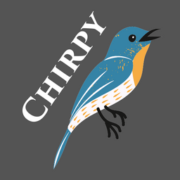

Chirpy API
A microblogging REST API built with Go and PostgreSQL. This server has no web client; everything
happens over JSON endpoints under /api.

A microblogging REST API built with Go and PostgreSQL. This server has no web client; everything
happens over JSON endpoints under /api.